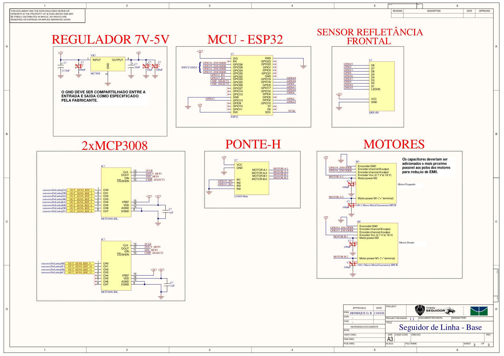
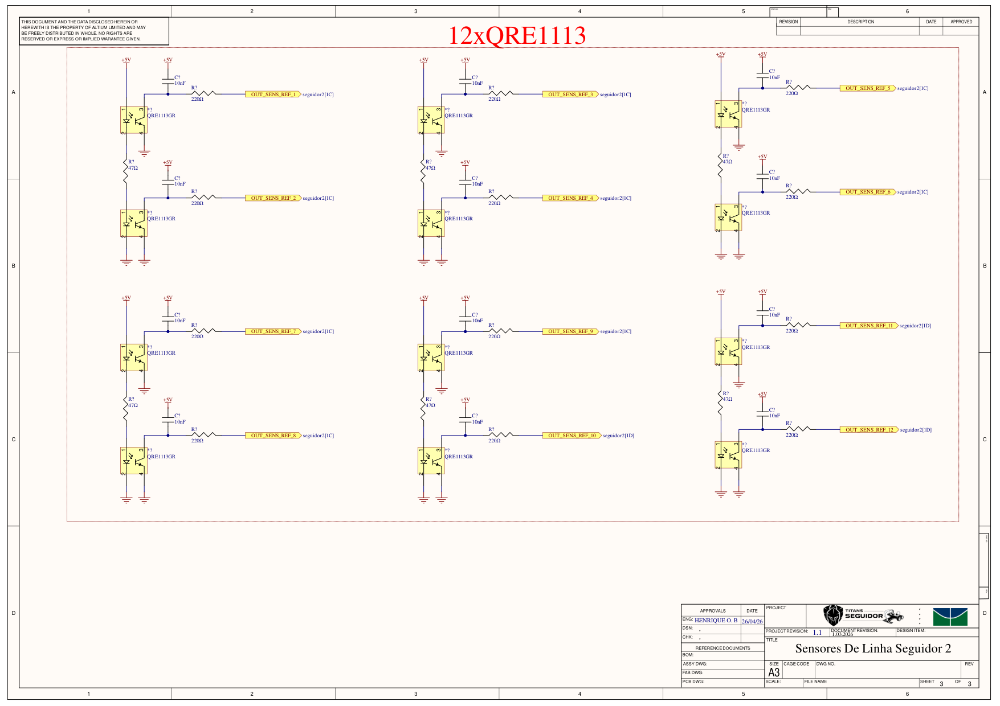

Eletrônica — Azzip
Esta página descreve o esquemático do Azzip: a placa base com a ESP32, a ponte H e os motores, e a placa de sensores de linha com 12 QRE1113 lidos por dois conversores MCP3008.
Sumário
- Metadados do esquemático
- Visualização do esquemático
- Alimentação
- ESP32: pinagem
- Motores, ponte H e encoders
- Sensor frontal QRE-8D
- Placa de sensores: 12× QRE1113 e 2× MCP3008
- Observações de projeto
- Referências bibliográficas
- Histórico de versões
Metadados do esquemático
| Campo | Folha 2 | Folha 3 |
|---|---|---|
| Título | Seguidor de Linha - Base | Sensores De Linha Seguidor 2 |
| Conteúdo | Regulador, ESP32, sensor frontal, 2× MCP3008, ponte H e motores | 12× QRE1113 |
| Revisão do projeto | 1.1 | 1.1 |
| Data | 13/04/2026 | 26/04/2026 |
| Autor | Henrique O. B. | Henrique O. B. |
| Ferramenta / formato | Altium, folha A3 | Altium, folha A3 |
Arquivos
O PDF do esquemático está em dados/esquematico-azzip.pdf. Ele contém as folhas 2 e 3 de 3 do projeto.
Visualização do esquemático

Figura 1: Placa base: regulador 7 V → 5 V, ESP32, sensor frontal, 2× MCP3008, ponte H e motores

Figura 2: Placa de sensores de linha com 12 QRE1113
Alimentação
| Rede | Origem | Alimenta |
|---|---|---|
| +7 V | Bateria | Entrada do regulador MC7805 |
| +5 V | Saída do MC7805 | Pino 5V0 da ESP32, VCC da ponte H (motores), Vcc dos encoders e a placa de 12 QRE1113 |
| +3,3 V | Regulador da própria placa da ESP32 (pino 3V3) | Sensor frontal QRE-8D e os dois MCP3008 (VDD e VREF) |
| GND | Comum | Todos os módulos |
Capacitores do regulador:
| Posição | Capacitor | Situação |
|---|---|---|
| Entrada | 0,33 µF eletrolítico | Montado |
| Entrada | 100 nF | NF (não montado) |
| Saída | 10 µF eletrolítico | Montado |
| Saída | 10 µF eletrolítico e 100 nF | NF (não montados) |
Nota da folha
O GND deve ser compartilhado entre a entrada e a saída do regulador, como especificado pelo fabricante.
ESP32: pinagem
| GPIO | Rede no esquemático | Ligado a |
|---|---|---|
| 36 | GPIO36_ENCODER |
Encoder esquerdo, canal A (somente entrada) |
| 39 | GPIO39_ENCODER |
Encoder esquerdo, canal B (somente entrada) |
| 35 | GPIO35_ENCODER |
Encoder direito, canal A (somente entrada) |
| 34 | GPIO34_ENCODER |
Encoder direito, canal B (somente entrada) |
| 32 | GPIO32_IN1 |
IN1 da ponte H (motor A, esquerdo) |
| 33 | GPIO33_IN3 |
IN3 da ponte H (motor B, direito) |
| 25 | CHIP_SELECT1 |
CS do MCP3008 nº 1 |
| 26 | CHIP_SELECT2 |
CS do MCP3008 nº 2 |
| SCK | SCLK |
CLK dos dois MCP3008 |
| 19 | GPIO19 |
LEDON do sensor frontal |
| 18 | GPIO18 |
D1 do sensor frontal |
| 5 | GPIO5 |
D2 do sensor frontal |
| 17 | GPIO17 |
D3 do sensor frontal |
| 16 | GPIO16 |
D4 do sensor frontal |
| 4 | GPIO4 |
D5 do sensor frontal |
| 13 | GPIO13 |
D6 do sensor frontal |
| 2 | GPIO2 |
D7 do sensor frontal |
| 15 | GPIO15 |
D8 do sensor frontal |
Pinos sem ligação: EN, GPIO0, GPIO1, GPIO3, GPIO9, GPIO10, GPIO11, GPIO12, GPIO14, GPIO21, GPIO22, GPIO23, GPIO27, D0 e D1.
GPIOs somente entrada
Os GPIOs 34, 35, 36 e 39 da ESP32 não têm saída nem resistor de pull-up interno. Por isso foram reservados para os encoders, que só precisam ser lidos.
Motores, ponte H e encoders
| Item | Componente |
|---|---|
| Ponte H | Módulo L298N Mini, VCC em +5 V |
| Motores | 2× Pololu 100:1 Micro Metal Gearmotor HPCB com encoder |
| Encoders | Alimentados em +5 V (faixa aceita: 2,7 V a 18 V) |
| Motor | Ponte H | Controle (ESP32) | Encoder A | Encoder B |
|---|---|---|---|---|
| Esquerdo | MOTOR-A-1 / MOTOR-A-2 | IN1 = GPIO32, IN2 = GND | GPIO36 | GPIO39 |
| Direito | MOTOR-B-1 / MOTOR-B-2 | IN3 = GPIO33, IN4 = GND | GPIO35 | GPIO34 |
Cada terminal dos motores tem um capacitor de 100 nF para o GND, marcado como NF (não montado).
Nota da folha
Os capacitores devem ficar o mais próximo possível dos polos dos motores, para reduzir a interferência eletromagnética (EMI).
Sensor frontal QRE-8D
Barra com 8 sensores de reflectância e saídas digitais D1 a D8, alimentada em +3,3 V. O pino LEDON (GPIO19) liga e desliga os emissores infravermelhos. A ligação de cada saída está na tabela da pinagem da ESP32.
Placa de sensores: 12× QRE1113 e 2× MCP3008
Sensores QRE1113
A placa tem 12 sensores QRE1113GR, montados em pares. Em cada par:
- Emissores: os dois LEDs infravermelhos ficam em série, do +5 V para o GND, com um resistor de 47 Ω.
- Saída: o coletor de cada fototransistor tem um capacitor de 10 nF para o +5 V e sai por um resistor de 220 Ω para a rede
OUT_SENS_REF_n.
Conversores MCP3008
Os dois MCP3008 (ADC de 10 bits e 8 canais, interface SPI) são alimentados em +3,3 V, com VREF também em +3,3 V e um capacitor de desacoplamento de 1 µF cada.
| MCP3008 | CS (ESP32) | Canais usados | Sensores |
|---|---|---|---|
| Nº 1 | GPIO25 (CHIP_SELECT1) |
CH0 a CH7 | OUT_SENS_REF_1 a OUT_SENS_REF_8 |
| Nº 2 | GPIO26 (CHIP_SELECT2) |
CH0 a CH3 | OUT_SENS_REF_9 a OUT_SENS_REF_12 |
No MCP3008 nº 2, os canais CH4 a CH7 ficam sem ligação.
Observações de projeto
Pontos encontrados na revisão do esquemático, para conferir antes de produzir a placa:
- SPI no pino SCK da ESP32: o
SCLKdos MCP3008 está no pino SCK. Nas placas de desenvolvimento ESP32 (WROOM), os pinos SCK, D0 e D1 são os GPIOs 6, 7 e 8, ligados à memória flash interna, e não podem ser usados. Como a ESP32 roteia o SPI para qualquer GPIO, dá para usar pinos livres, por exemplo GPIO14 (SCLK), GPIO27 (DIN/MOSI) e GPIO23 (DOUT/MISO). - DIN e DOUT dos MCP3008 sem ligação: as redes
DIN_MCP1,DIN_MCP2,DOUT_MCP1eDOUT_MCP2não chegam à ESP32. No barramento SPI, os dois DIN se ligam juntos ao MOSI e os dois DOUT juntos ao MISO; cada chip é escolhido pelo seu CS. - Circuito dos QRE1113 é do tipo RC: o capacitor de 10 nF com o resistor de 220 Ω na saída é o circuito usado em barras de leitura por tempo de descarga (como a QTR-RC da Pololu). Esse tipo de leitura exige um GPIO que carregue o capacitor e depois meça o tempo de descarga; um canal de ADC não faz isso. Sem um resistor de pull-up no coletor, o MCP3008 lê sempre perto de 0. Para leitura analógica, o circuito usual tem um pull-up do coletor para a alimentação, como na QTR-A da Pololu.
- Saída de 5 V em ADC de 3,3 V: os sensores ficam em +5 V e os MCP3008 em +3,3 V. As entradas do MCP3008 não devem passar de VDD + 0,6 V. Se for colocado um pull-up, ele deve ir para o +3,3 V, ou os MCP3008 devem passar para +5 V com divisores de tensão no DOUT para a ESP32.
- Motores alimentados pelo 7805: a ponte H tira os +5 V do MC7805, que fornece cerca de 1 A. Na partida ou com o motor travado, os dois motores HPCB podem passar desse valor, e o regulador desliga ou derruba a ESP32. Além disso, o 7805 precisa de cerca de 2 V acima da saída, então 7 V na entrada é o mínimo. Uma opção é ligar o VCC da ponte H direto na bateria.
- Motores em um sentido só: IN2 e IN4 estão no GND, então cada motor só gira para frente e não dá para frear invertendo o sentido. Ligar IN2 e IN4 a GPIOs livres permite ré e frenagem ativa.
- Pinos de boot no sensor frontal: os GPIOs 2, 5 e 15 (D7, D2 e D8 do sensor frontal) definem o modo de boot da ESP32. Se o sensor forçar um nível nesses pinos na energização, a gravação ou a inicialização pode falhar.
- Capacitores NF: os capacitores de 100 nF dos motores e parte dos capacitores do regulador estão marcados como não montados. Vale montar os dos motores, conforme a nota da própria folha.
Referências bibliográficas
[1] Espressif Systems. ESP32 Series Datasheet e ESP32 Technical Reference Manual: pinos somente entrada, pinos de boot, memória flash e matriz de GPIO.
[2] Microchip. MCP3004/3008 Datasheet: ADC de 10 bits com interface SPI.
[3] onsemi. QRE1113 Datasheet: sensor reflexivo infravermelho.
[4] Pololu. QTR Reflectance Sensors: versões analógica (A) e por tempo de descarga (RC).
[5] Pololu. Micro Metal Gearmotors: corrente de partida e de travamento das versões HPCB.
[6] STMicroelectronics / Texas Instruments. L78xx / LM7805 Datasheet: regulador linear de 5 V.
Histórico de Versões
| Versão | Descrição | Autor(es) | Data de Produção | Revisor(es) |
|---|---|---|---|---|
1.0 |
Modelagem inicial do readme | Felipe das Neves | 02/03/2026 | ✓ |
1.1 |
Esquemático da placa base e da placa de sensores, pinagem e observações de projeto | Felipe das Neves | 29/10/2026 | — |